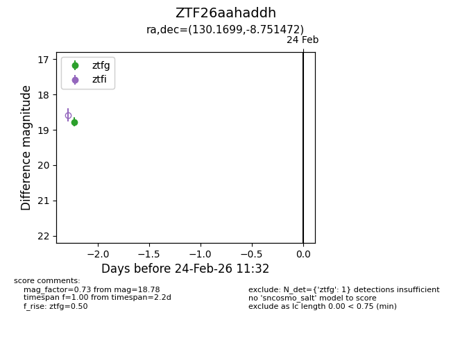
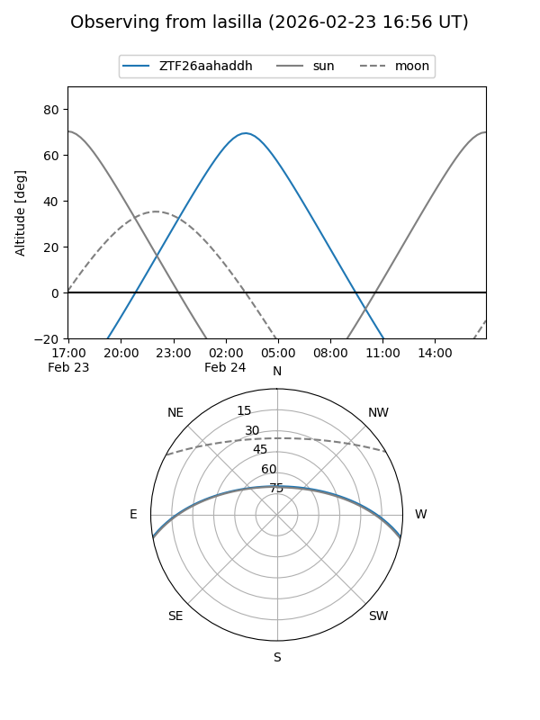
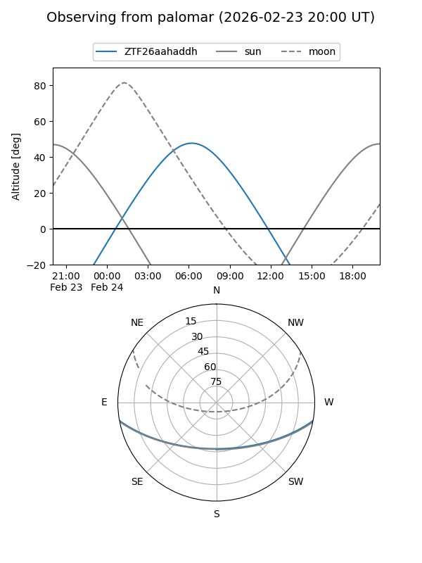

ZTF26aahaddh
Target ZTF26aahaddh at 2026-02-24 11:33
Aliases and brokers:
FINK: link
Lasair: link
ALeRCE: link
alt names
ZTF26aahaddh (ztf,fink_ztf)
Coordinates:
equatorial (ra, dec) = 130.1699,-8.75147
equatorial (HMS+DMS) = 08:40:40.78,-08:45:05.30
galactic (l, b) = (234.2203,+19.52422)
Flags:
Photometry:
last ztfg=18.78
1 ztfg detections
Lightcurve

Visibility


Additional plots